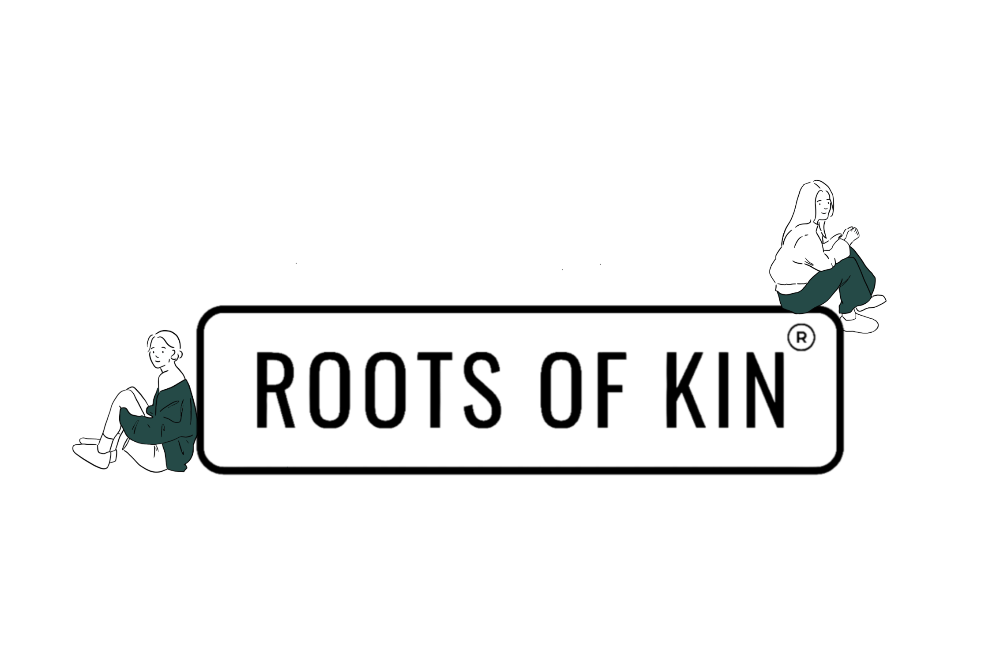
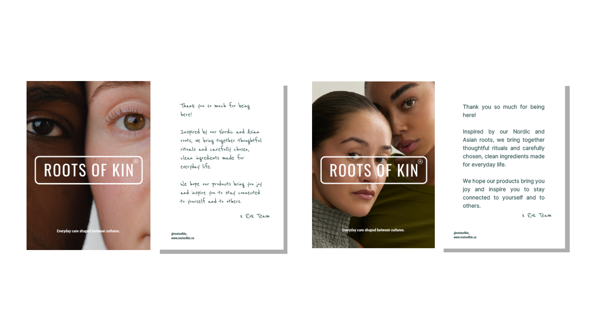
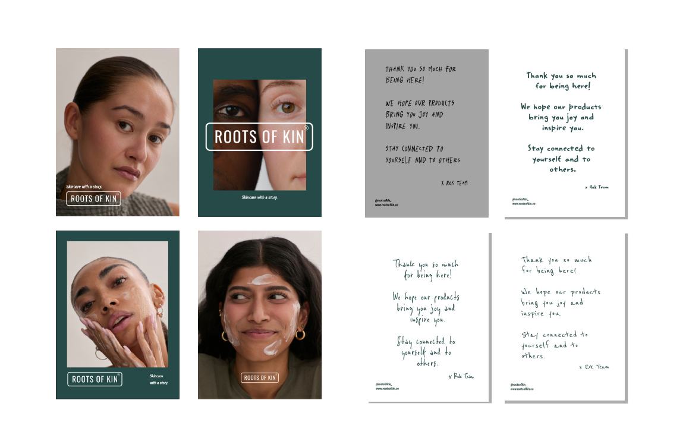
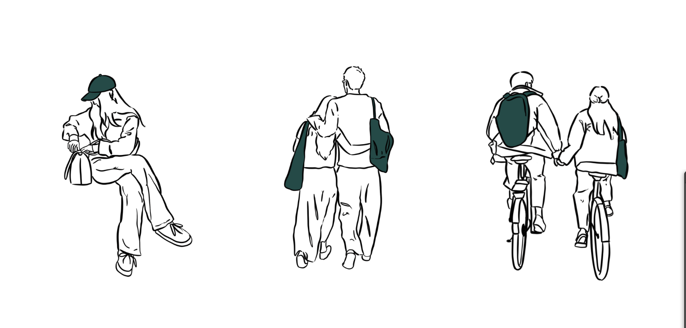
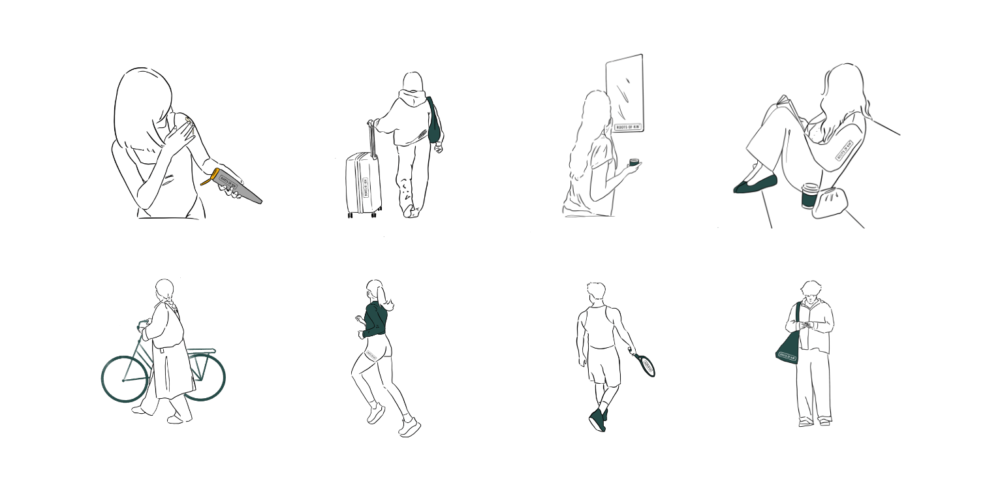
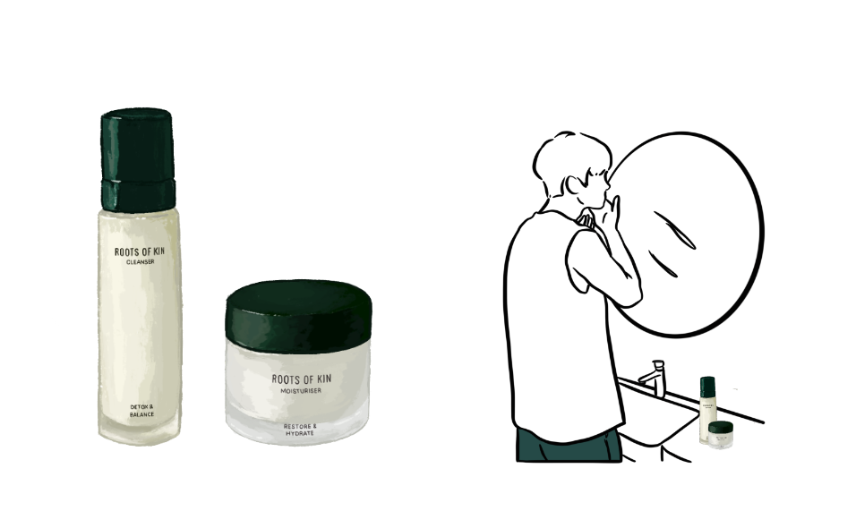
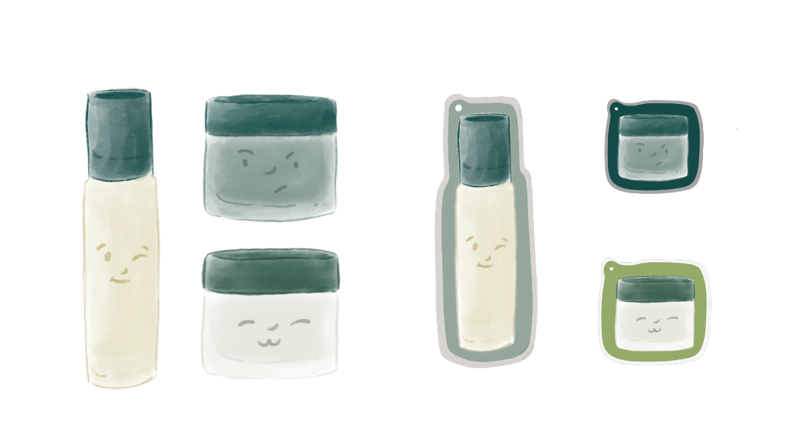
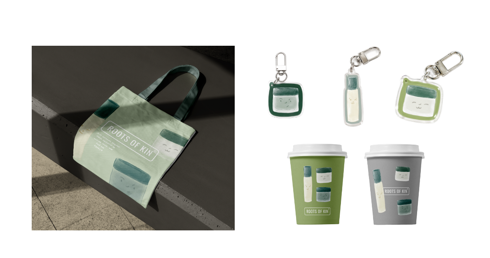

Roots of Kin
Selected Work
A collection of work for Roots of Kin, spanning printed brand touchpoints, minimal illustrations, product imagery and social content.

Brand Card Design
Project section
A refreshed set of printed brand touchpoints, including a thank you card that pairs clean typography with a personal handwritten detail.
Focus
Brand identity · Print design


Minimal Illustrations
Project section
A family of minimal line illustrations bringing warmth and character to the Roots of Kin visual language.
Focus
Illustration · Visual identity


Product Illustrations
Project section
Product focused illustrations developed for Roots of Kin skincare, connecting the product range with the wider brand world.
Focus
Illustration · Packaging



Social Media
Project section
A series of social stories using illustration and movement to give the brand a lively, recognisable voice online.
Focus
Social content · Art direction